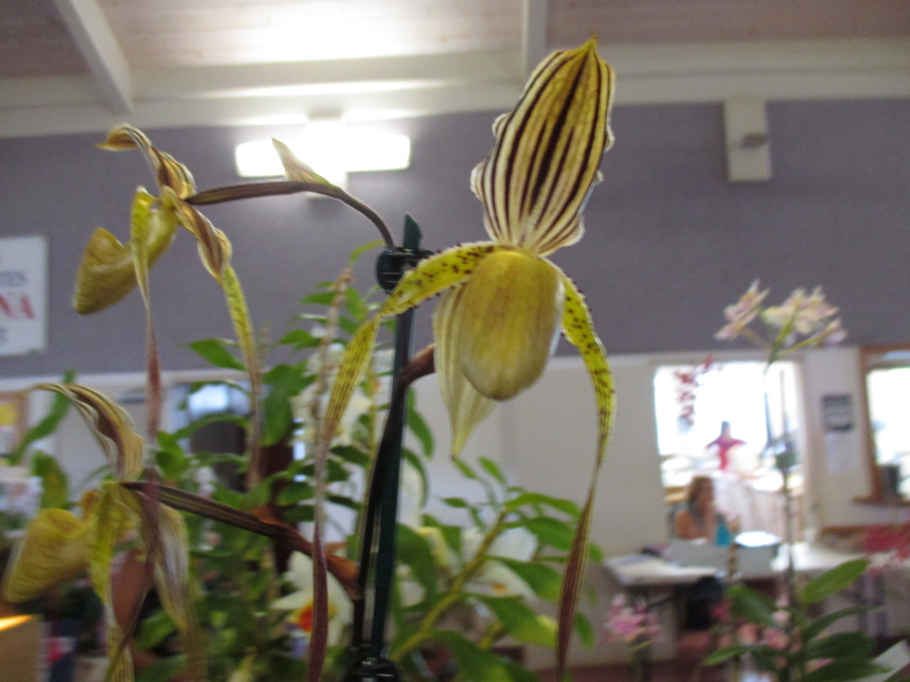

A purple spotted white Phalaenopsis, or Moth Orchid.
Isn't it pretty?

A green Paphiopedilum, or Slipper Orchid.
This one seems elegant somehow.
A yellow-green Oncidium Maculatum orchid.
I really love the spots on this one.
A black Dendrobium Orchid.
The color on this one is lovely.